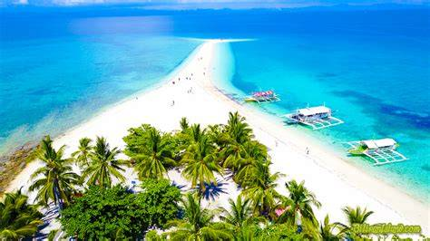
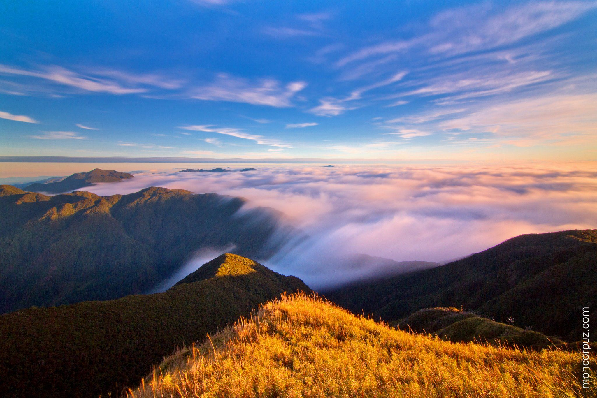
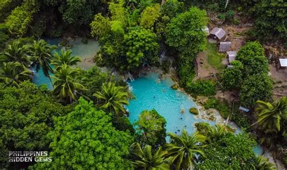
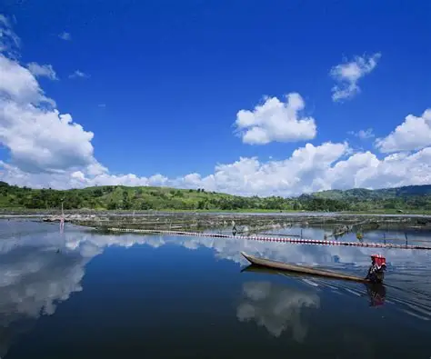
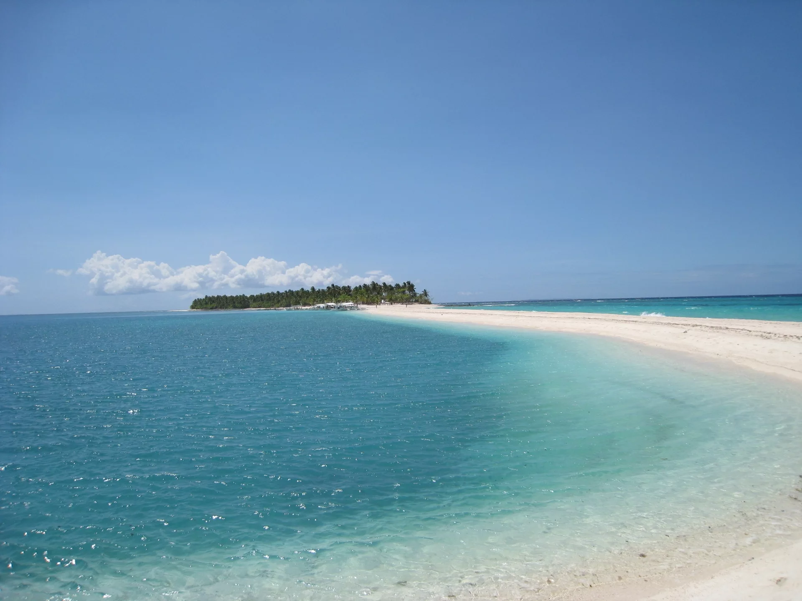

Famous for its long white sandbars and crystal-clear waters, Kalanggaman Island is perfect for beach lovers seeking peace and simplicity.

A stretch of white sand reaching into the sea — Kalanggaman is paradise in its purest form.
The third highest mountain in the Philippines, Mount Pulag is famous for its “sea of clouds” and breathtaking sunrise views.

Above the clouds, silence and sunrise meet in golden perfection.
Known for its mystical charm, turquoise waterfalls, and white beaches, Siquijor offers both adventure and tranquility.

Siquijor blends mystery and magic with the calm rhythm of island life.
A peaceful lake surrounded by mountains and home to the T’boli culture, Lake Sebu is perfect for nature and culture lovers.

Where culture flows as deeply as the waters of the lake.
A small island paradise famous for thresher shark diving and stunning white sand beaches.

Adventure dives deep in the waters of Malapascua.